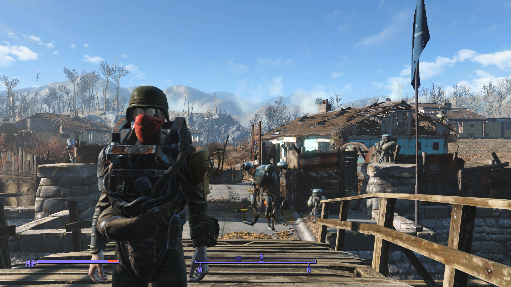
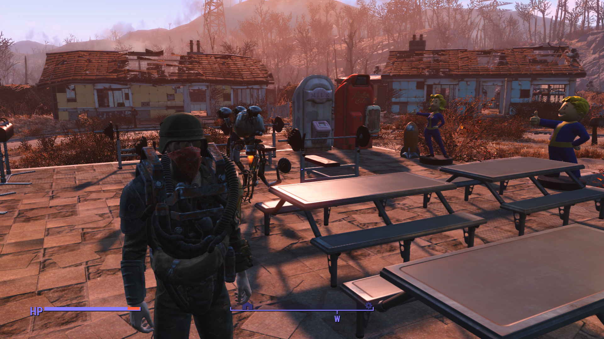
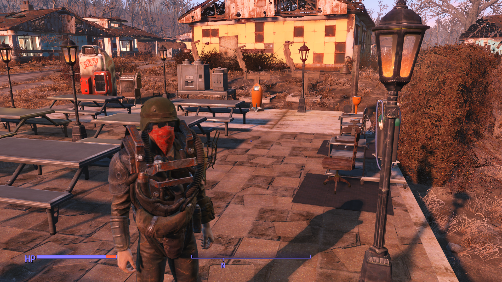
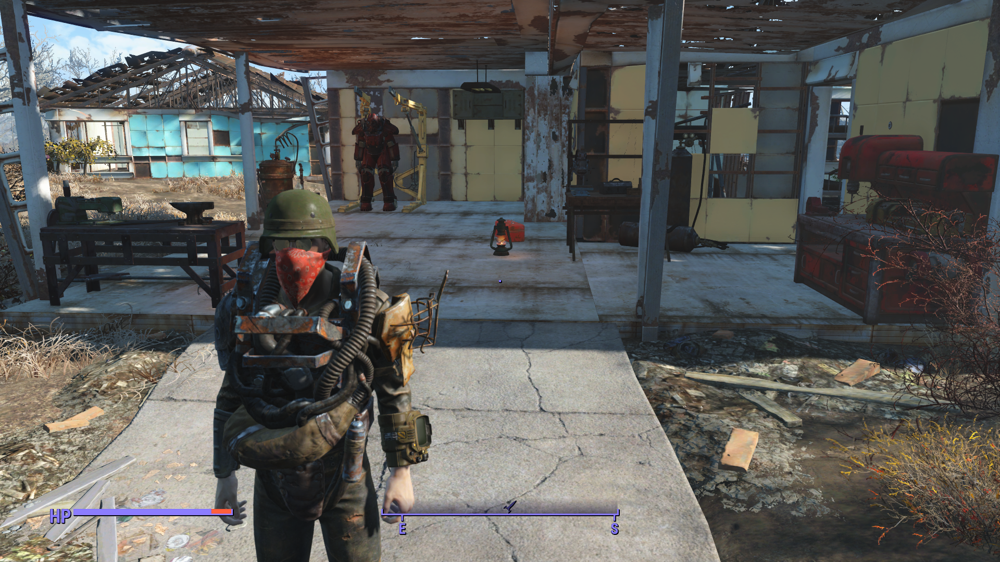
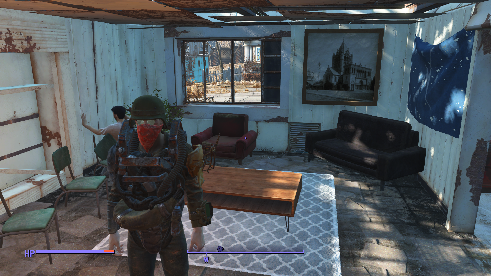
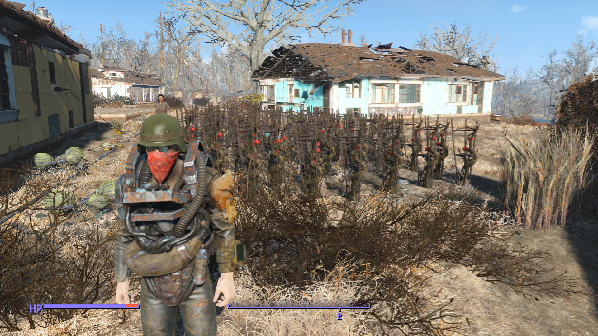
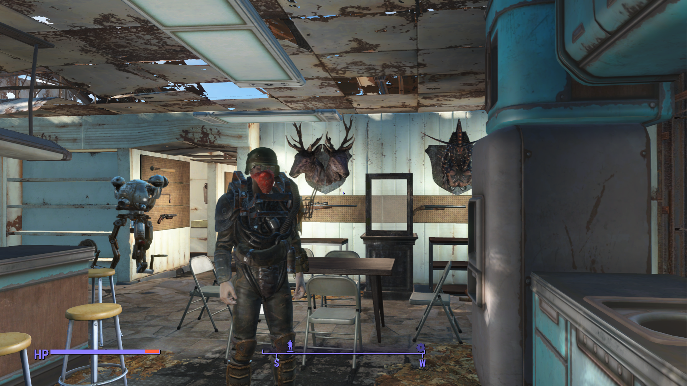
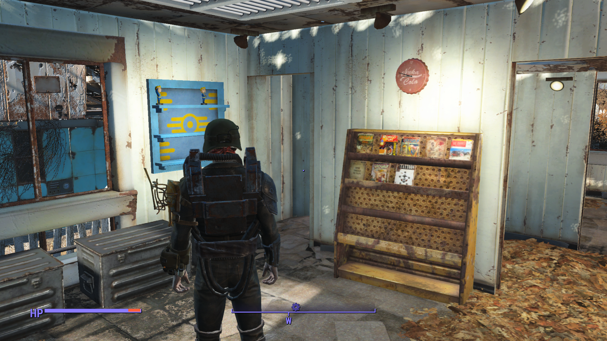
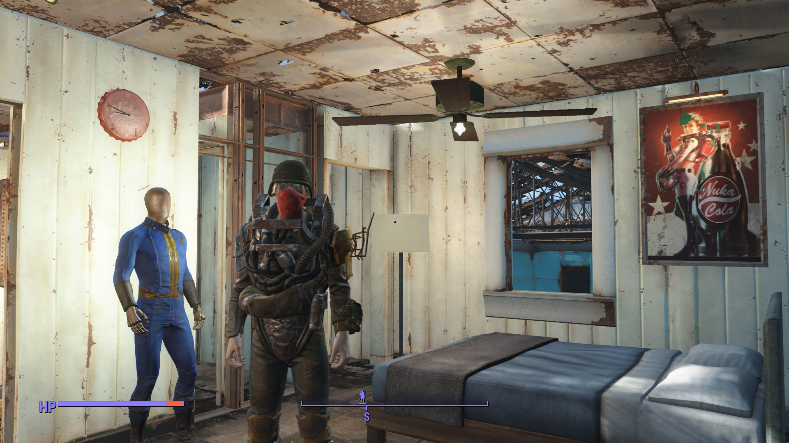

status: Bilbo Bloggins
Yeah I know, I know, but I got the urge to play some game, any game, and I couldn't fucking force myself to play anything else, so I booted up this fuckass game on my xbox off of a whim, because why the fuck not? And yknow what It was a based ass decision, because while this game has one of the most fucked main quests i've played, at the end of the day it is in fact still a decent shooter.
(sorry for the language lol)
And oh boy is it a fun melee game. Smashing people's head in with a baseball bat covered in razor blades never gets old, and the fact that I can run up to raiders shooting me, tank all their shots, and then bash thier skull in is just so exhilarating. I can't believe I haven't decided to do this sooner, because I have really missed out.
It's ironic because I honestly am not all that big on Skyrim, or other Elder Scrolls games for that matter (even though I own all of them on Steam), because they are very heavily melee based. But with a game like fallout, a game that is very ranged-centric, it feels like a whole new way of viewing the game. It feels like the strategy has evolved, instead of using a ranged weapon and VATS, constantly banking crits, using the 'ultra accuracy machine' to kill every enemy in the room within seconds of entering (which, believe me gets real old real fast), I am actually taking time to think an engaugement through, even ones I've done hundreds of times, because my standard route of attack wouldn't work without a long range rifle. It actually feels rewarding to play again, after years of barely playing an hour a month. Picking the perks is just as fun, because I am actually trying to use the best perks for this build. I've only run into a couple issues, first and foremost, I don't seem to be earning as much XP as I would like, and secondly, Codsworth is a pain for melee, as he keeps killing things before I can get a hit off, which is also problematic for XP as I only get XP when I hit the thing, but that should be resolved shortly as I am on the verge of getting his perk.
Anyway, thanks for reading my ramble, here are some pictures of my sanctuary settlement :).








